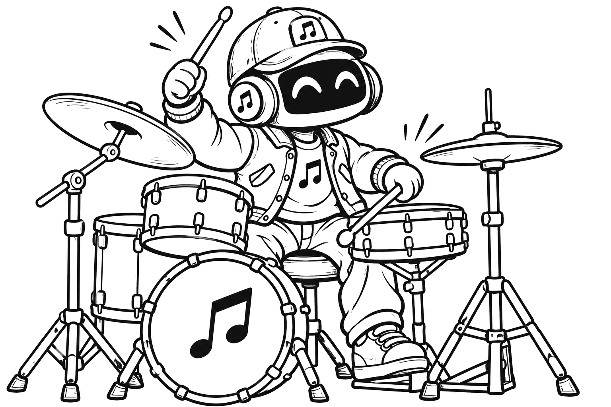

<!doctype html>
<html lang="pt-BR"><head><meta charset="utf-8"><title>Beaterista Escola de Música · Next Level · Intermediário · Bateria · Robôterista Explica</title>
<meta name="viewport" content="width=device-width,initial-scale=1"><link rel="stylesheet" href="estilo.css">
<style>.gabcols{columns:2;column-gap:7mm;flex:1;overflow:hidden}.gi{break-inside:avoid;margin-bottom:2.5mm;border-bottom:1px dotted #000;padding-bottom:1.5mm;font-size:11.5px;line-height:1.35}.gi b.n{font:400 12px 'Special Elite',monospace}.gi svg.ritmo,.gi svg.pauta{max-height:24mm}.gi table.grade th,.gi table.grade td{height:4.8mm;font-size:9px}.gi .gab td,.gi .gab th{font-size:10px;padding:.8mm 1.4mm}.gi table td,.gi table th{font-size:10.5px;padding:.8mm 1.4mm}</style></head>
<body><div id="doc"></div>
<script type="module">
import { P, LOGO, paul, fala, caixa, tabela, lin, cx, monta, criaExercicios, pronto, topo } from './lib.js';
import { paginas as pBateria } from './bateria.js';
import { paginas as pRitmo } from './ritmo.js';

const { ex, GAB } = criaExercicios();
import { paginas as pBateria2, leituraRitmica, empunhaduraPratica } from './bateria2.js';
const batP = pBateria(ex); const ritAll = pRitmo(ex); const b2 = pBateria2(ex); const lr = leituraRitmica();
// ritmo: só a parte conceitual (a leitura e os grooves agora são na pauta de bateria)
const rit = [...ritAll.filter((p) => !/leitura rítmica|grooves de bateria|claves|polirritmia/.test(p.titulo)), ...lr];
const por = (re) => batP.filter((p) => re.test(p.titulo)); const sem = (re) => batP.filter((p) => !re.test(p.titulo));
const fund = [...por(/postura/), ...por(/leitura: /), ...por(/contar/), ...por(/empunhadura/), empunhaduraPratica(ex), ...por(/baquetas|hickory|vassourinha|pad de estudo|rebote|Moeller|moeller|pontas/)];
const usados = new Set(fund); const maos = batP.filter((p) => !usados.has(p) && /diddle|paradiddle|up e down|rimshot|pivô|ghost|acentos|tercinas na bateria|sextinhas|dinâmica/.test(p.titulo));
maos.forEach((p) => usados.add(p));
const coord = batP.filter((p) => !usados.has(p) && /coordenação/.test(p.titulo)); coord.forEach((p) => usados.add(p));
const resto = batP.filter((p) => !usados.has(p) && !/chimbal em semicolcheias|linear/.test(p.titulo));
const lista = [...fund, ...rit, ...maos, ...coord, ...b2, ...resto]; lista.forEach((p, i) => { p.titulo = p.titulo.replace(/^\d+ ·/, `${i + 1} ·`).replace(/^(?!\d+ ·)/, `${i + 1} · `); });
// exercícios das páginas que saíram do capítulo de ritmo não entram no gabarito; e a numeração segue a ORDEM DAS PÁGINAS (não a ordem em que foram criados)
for (let k = GAB.length - 1; k >= 0; k--) if (/monte o groove|ditado rítmico/.test(GAB[k].titulo) && GAB[k].sec === 'R') GAB.splice(k, 1);
{ const cont = { R: 0, B: 0 }; const mapa = {}; lista.forEach((p) => { p.html = p.html.replace(/exercício ([RB])(\d+):/g, (m, L, n) => { const novo = `${L}${++cont[L]}`; mapa[`${L}${n}`] = novo; return `exercício ${novo}:`; }); });
  GAB.forEach((g) => { g.num = mapa[g.num] || g.num; }); GAB.sort((a, b) => a.sec.localeCompare(b.sec) || Number(a.num.slice(1)) - Number(b.num.slice(1))); }
const n1 = fund.length; const n2 = rit.length; const n3 = maos.length; const n4 = coord.length + b2.length + resto.length;
const SECOES = [['Fundamentos (postura, leitura, contar, empunhadura, baquetas, pad, rebote)', lista.slice(0, n1)], ['Ritmo (tempo, compasso, subdivisão, leitura rítmica)', lista.slice(n1, n1 + n2)], ['Mãos e técnicas', lista.slice(n1 + n2, n1 + n2 + n3)], ['Coordenação, chimbal, bumbo, linear e plano', lista.slice(n1 + n2 + n3)]];

/* páginas da frente */
const capa = { capa: true, html: `<h1 style="font-size:60px">Next Level</h1><div class="sub" style="font-size:26px">Intermediário · Bateria</div><div class="tarja">Robôterista Explica</div><p class="mao">caderno de estudo em preto e branco · exercícios com gabarito · pad, grooves e plano de evolução</p><p class="peq">nome: ${lin('g')} &nbsp; início: ${lin('m')} &nbsp; fim: ${lin('m')}</p>` };
const comoUsar = { secao: 'bateria', titulo: 'como usar', html: `<h2>Como usar este caderno</h2>${fala('paul-bateria', 'este é o caderno de <b>bateria</b> do nível intermediário e avançado. aqui você cuida da <b>postura</b>, aperfeiçoa as <b>mãos</b> (rudimentos, técnicas), ganha <b>coordenação</b> e monta <b>grooves</b> de verdade. ele inclui o capítulo de <b>ritmo</b> (compasso, subdivisão, síncope, tercinas e leitura rítmica), que todo músico precisa dominar.')}
${caixa('antes de começar: você já sabe…', `<p>${cx('tocar um rock básico (chimbal, caixa e bumbo)')}<br>${cx('contar 1 2 3 4 em voz alta')}<br>${cx('ler semínimas e colcheias')}<br>${cx('tocar singles (mão a mão) no pad')}</p><p class="peq">se faltou algum, comece pelo método da Beaterista (aulinhas de bateria e Hero Drum no app).</p>`)}
${caixa('como ler os exercícios', tabela(['símbolo', 'significa'], [['<b>D</b> · <b>E</b>', 'mão direita · mão esquerda (letra em cima ou embaixo da nota)'], ['<b>B</b>', 'bumbo (pé direito)'], ['<b>MAIÚSCULA</b> · minúscula', 'maiúscula = acento (forte) · minúscula = suave'], ['x na pauta', 'pratos e chimbal'], ['bolinha', 'caixa, toms, surdo e bumbo'], ['losango', 'cúpula do ride'], ['( )', 'nota fantasma'], ['&gt;', 'acento'], ['1 e & a', 'contagem das semicolcheias (a mesma do Beat Lab do app)']]))}
${caixa('como estudar', `<ol style="margin:0 0 0 5mm;padding:0"><li><b>leia</b> a explicação e olhe a partitura;</li><li><b>fale a contagem</b> sem tocar, depois tocando;</li><li>comece <b>devagar</b> (♩ = 60) com metrônomo;</li><li>faça o <b>exercício tracejado</b> e confira no gabarito;</li><li>registre o andamento e só suba 5 bpm quando tocar 4 vezes sem errar.</li></ol>`)}
<div class="caixa tracejada"><h3>materiais</h3><p class="peq">bateria (ou pad de estudo) · baquetas · metrônomo · lápis e borracha · celular pra gravar seu treino.</p></div>` };
let nIdx = 5; const itens = ([nome, l]) => l.map((p) => `<tr><td class="l" style="font-size:11px">${(p.html.match(/<h2>(.*?)<\/h2>/) || [0, p.titulo])[1].replace(/<[^>]+>/g, '')}</td><td class="ind" data-ref="${nIdx}" style="width:10mm">${nIdx++}</td></tr>`);
const bloco = (nome, linhas) => `<div class="caixa"><h3>${nome}</h3><table class="gab">${linhas.join('')}</table></div>`;
const L = SECOES.map((sc) => itens(sc)); const meio = Math.ceil(L[3].length / 2);
const idx1 = [0, 1, 2].map((k) => bloco(SECOES[k][0], L[k])).join('');
const indice = { secao: 'bateria', titulo: 'índice (1/2)', html: `<h2>Índice e mapa do curso</h2>${fala('paul-estudando', 'são <b>4 etapas</b> que se completam: o <b>corpo e a leitura</b>, o <b>ritmo</b> (importante pra todo músico), as <b>mãos</b> e a <b>coordenação</b>. estude um tema por dia!')}<div class="duas" style="align-items:start"><div>${bloco(SECOES[0][0], L[0])}${bloco(SECOES[1][0], L[1])}</div><div>${bloco(SECOES[2][0], L[2])}</div></div>` };
const indice2 = { secao: 'bateria', titulo: 'índice (2/2)', html: `<h2>Índice (continuação)</h2><div class="duas" style="align-items:start">${bloco(SECOES[3][0] + ' (1)', L[3].slice(0, meio))}${bloco(SECOES[3][0] + ' (2)', L[3].slice(meio))}</div><div class="caixa"><h3>no fim do caderno</h3><p class="peq">gabarito de todos os exercícios (R = ritmo, B = bateria).</p></div>` };

const todas = [capa, comoUsar, indice, indice2, ...SECOES.flatMap(([, l]) => l)];
const doc = document.getElementById('doc'); doc.innerHTML = monta(todas, 'Escola Beaterista · Next Level · Intermediário · Bateria', 'bateria');
await pronto(); // imagens e fontes carregadas ANTES de medir as páginas

/* paginação: se uma página passa da altura, primeiro tenta reduzir um pouco (até 92%); se ainda não couber, passa os últimos blocos pra uma página de continuação (nada fica pequeno demais) */
const sobra = (pg) => pg.scrollHeight - pg.clientHeight;
const miolo = (pg) => [...pg.children].filter((c) => !c.classList.contains('top') && !c.classList.contains('rod'));
const zoom = (pg, f) => miolo(pg).forEach((c) => { c.style.zoom = f === 1 ? '' : f.toFixed(3); });
const reduzidas = []; const divididas = [];
function ajusta(pg) {
  if (sobra(pg) <= 2) return;
  let f = 1; for (let k = 0; k < 12 && sobra(pg) > 2; k++) { f -= 0.01; zoom(pg, f); }
  if (sobra(pg) <= 2) { reduzidas.push([pg.dataset.k, Number(f.toFixed(2))]); return; }
  zoom(pg, 1);
  const blocos = miolo(pg); if (blocos.length < 3) { for (let k = 0; k < 25 && sobra(pg) > 2; k++) { f -= 0.01; zoom(pg, f); } reduzidas.push([pg.dataset.k, Number(f.toFixed(2))]); return; }
  const nova = document.createElement('section'); nova.className = pg.className; nova.dataset.k = pg.dataset.k; nova.dataset.cont = '1';
  const top = pg.querySelector('.top').cloneNode(true); top.lastElementChild.textContent += ' (continuação)'; const rod = pg.querySelector('.rod').cloneNode(true); nova.append(top); const movidos = [];
  while (sobra(pg) > 2 && miolo(pg).length > 2) { movidos.unshift(miolo(pg).pop()); pg.querySelector('.rod').before(movidos[0]); pg.removeChild(movidos[0]); }
  movidos.forEach((m) => nova.append(m)); nova.append(rod); pg.after(nova); divididas.push(pg.dataset.k);
  ajusta(nova);
}
[...document.querySelectorAll('.pg:not(.capa)')].forEach(ajusta);

/* gabarito: preenche página por página, medindo o que cabe */
const nomeSec = { R: 'ritmo', B: 'bateria' };
let nPag = todas.length;
const novaPag = (t) => { nPag++; const s = document.createElement('section'); s.className = 'pg'; s.innerHTML = `${topo('gabarito', t)}<h2>Gabarito</h2><div class="gabcols"></div><div class="rod"><span>Escola Beaterista · Next Level · Intermediário · Bateria</span><span>página ${nPag}</span></div>`; doc.appendChild(s); return s; };
for (const sec of ['R', 'B']) {
  let pag = novaPag(`gabarito · ${nomeSec[sec]}`); let cols = pag.querySelector('.gabcols');
  for (const g of GAB.filter((x) => x.sec === sec)) {
    const d = document.createElement('div'); d.className = 'gi'; d.innerHTML = `<b class="n">${g.num} · ${g.titulo}</b><div>${g.resp}</div>${g.porque ? `<div class="porque"><i>por quê:</i> ${g.porque}</div>` : ''}`; cols.appendChild(d);
    if (cols.scrollWidth > cols.clientWidth + 2 || pag.scrollHeight > pag.clientHeight + 2) { cols.removeChild(d); pag = novaPag(`gabarito · ${nomeSec[sec]}`); cols = pag.querySelector('.gabcols'); cols.appendChild(d); }
  }
}
await pronto();
/* número final das páginas (+ página de anotações se o total for ímpar, pra imprimir frente e verso) e índice com os números certos */
if (document.querySelectorAll('.pg').length % 2) { const a = document.createElement('section'); a.className = 'pg anot'; a.innerHTML = `${topo('anotações', 'espaço livre')}<h2>Anotações</h2><p class="peq">dúvidas, descobertas e ideias de groove:</p>${'<div class="linha"></div>'.repeat(24)}<div class="rod"><span>Escola Beaterista · Next Level · Intermediário · Bateria</span><span></span></div>`; doc.appendChild(a); }
[...document.querySelectorAll('.pg')].forEach((pg, i) => { const r = pg.querySelector('.rod'); if (r) r.lastElementChild.textContent = `página ${i + 1}`; });
document.querySelectorAll('td.ind').forEach((td) => { const alvo = document.querySelector(`.pg[data-k="${td.dataset.ref - 1}"]`); if (alvo) td.textContent = [...document.querySelectorAll('.pg')].indexOf(alvo) + 1; });
const A = window.__avisos || [];
const estouro = [...document.querySelectorAll('.pg')].map((p, i) => [i + 1, p.scrollHeight - p.clientHeight]).filter(([, d]) => d > 2);
window.__pronto = `${document.querySelectorAll('.pg').length} páginas`; window.__relatorio = { avisos: A, divididas, reduzidas, total: document.querySelectorAll('.pg').length, aindaEstouram: [...document.querySelectorAll('.pg')].map((p, i) => [i + 1, p.scrollHeight - p.clientHeight]).filter(([, d]) => d > 2) };
</script></body></html>
